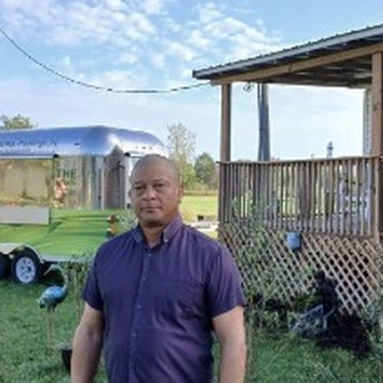

Dr. Reinaldo Hanoi Valdes Reinoso
Fundador e Investigador Principal
Ingeniero Forestal, Máster y Doctor en Ciencias Forestales. Lidera la visión estratégica y científica de Valdes Armas, integrando sistemas agroforestales, sostenibilidad ambiental y bienestar humano.
📧 Correo: por definir
📞 Teléfono: por definir